Adding Custom Content to Synth Riders
Last updated [ add date ] · work in progress
Custom songs and stages are officially supported in Synth Riders — they're drop-in files, so you don't need MelonLoader to use them. This covers adding custom songs on PC and custom stages on both PC and Quest.
SynthRidersUC — that's where the
CustomSongs and CustomStages folders live on PC.
Custom songs — PC
There are two ways to add custom songs to the game on PC.
Point NoodleManager at your install
Download NoodleManager (currently linked on synthriderz.com), open it, then point it at your Synth Riders install folder. On the top row click Settings, then click Select and navigate to the SynthRidersUC folder — usually found at:
C:\Program Files (x86)\Steam\steamapps\common\SynthRiders\SynthRidersUC\If yours is somewhere else, follow step 1a to find it.
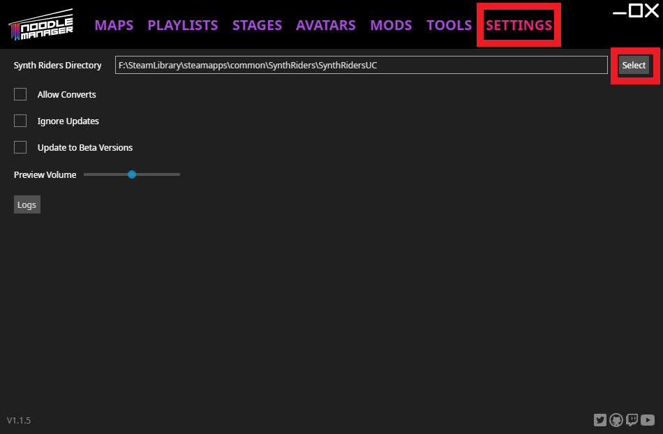
Can't find the install folder?
Open Steam, right-click Synth Riders, hover Manage, then click Browse Local Files — this opens the game's install location in a file manager window. Make a note of that path; it's where you point NoodleManager (back at step 1).
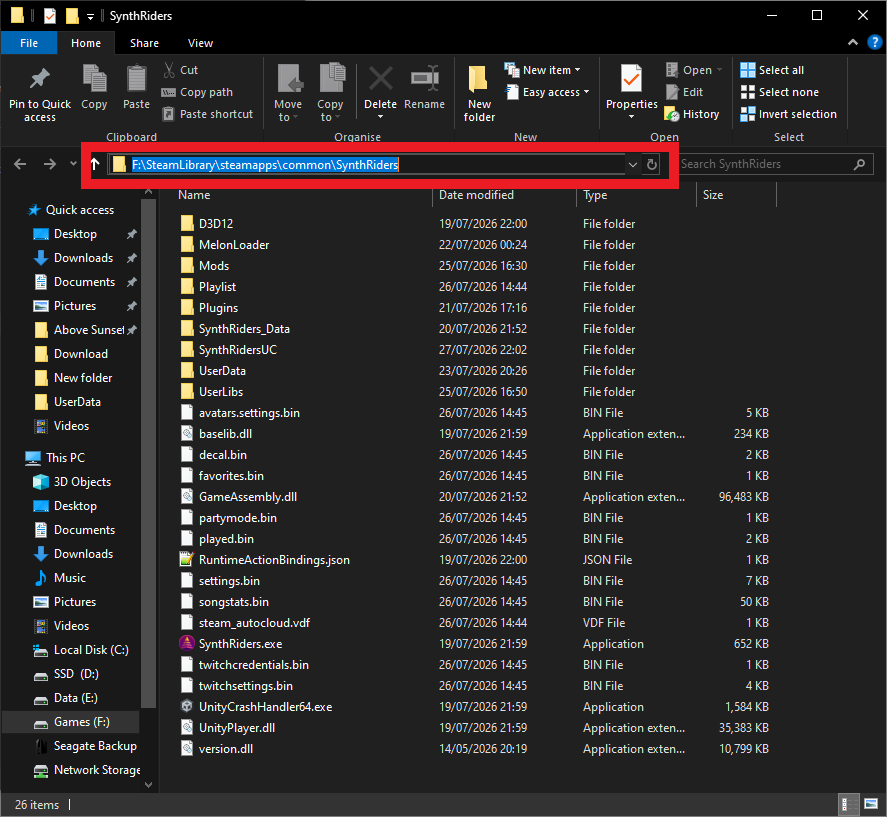
Grab the custom songs
With NoodleManager pointed at the right directory, go to the Maps tab at the top. If it's your first time, the Get All button in the purple bar downloads everything — it can take a while to acquire, but it's worth it. Just want the latest? Use Get Page or click the download icon on an individual map.
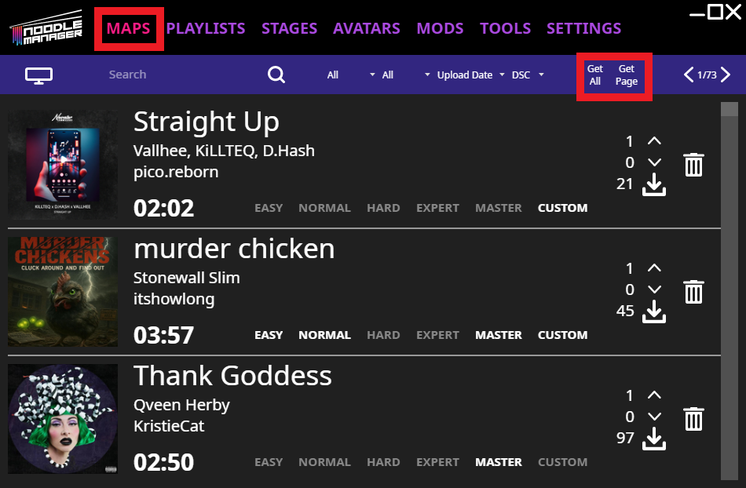
Done
That's it. Next time, just open NoodleManager and download new maps whenever you want them.
First, know the directory you're installing to — find it with step 1a above. It's typically:
C:\Program Files (x86)\Steam\steamapps\common\SynthRiders\SynthRidersUC\Then head to synthriderz.com and click the Custom Songs option on the left — you'll land on this page:
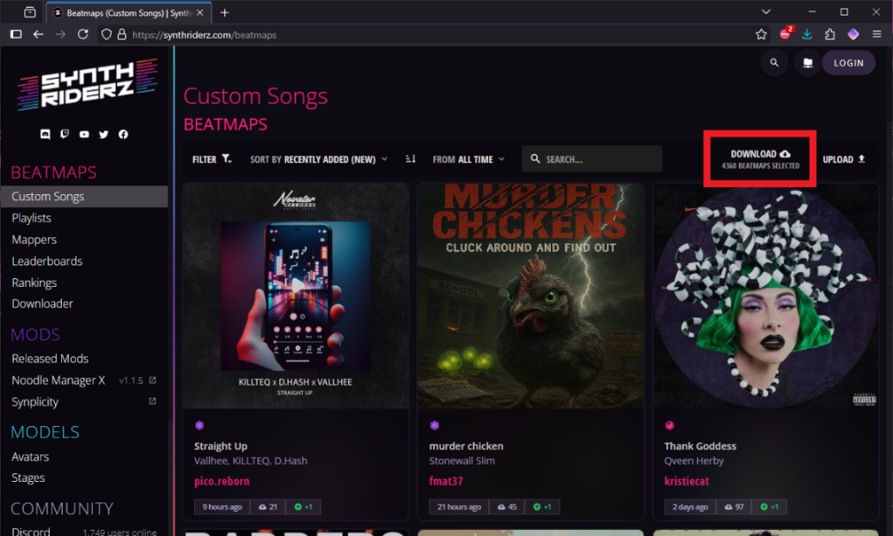
Click the download button and the site's own downloader appears, with two ways to go:
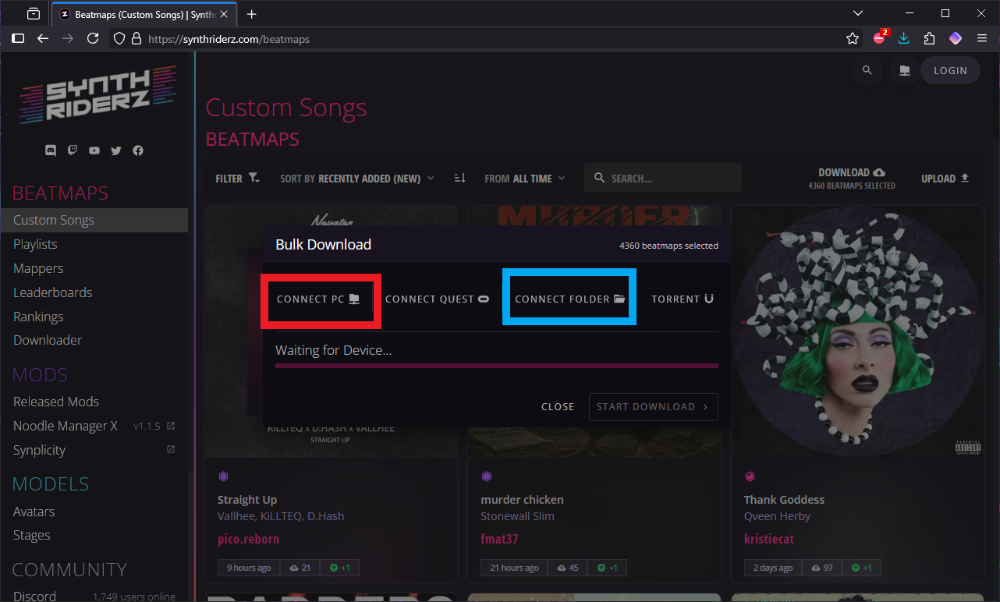
This has the site install directly to the CustomSongs folder inside SynthRidersUC.
Point it at the CustomSongs folder
Click the direct-install option, click OK, then point it to the CustomSongs folder.
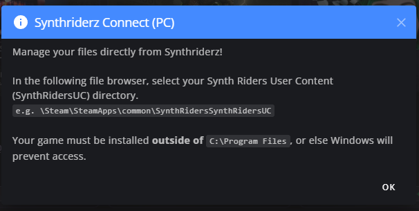
Allow browser access
The browser pops a notification asking to read and write to the folder — click Allow.
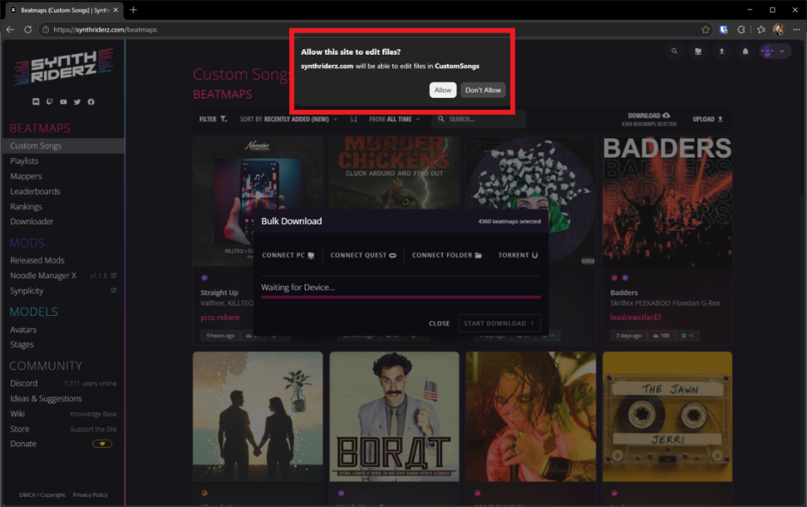

Start the download
The downloader's ready — click Start Download and go grab yourself a nice brew while it does its thing.
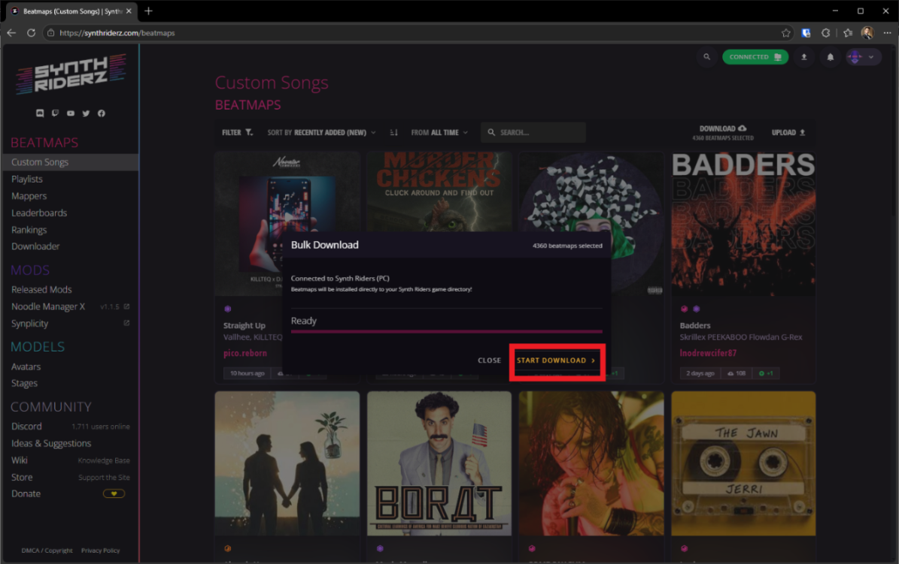
When it says Download complete, the songs are installed. Open Synth Riders and let it build the song database — keep enjoying that brew. Once it's done, your custom songs are ready in solo mode or in multiplayer lobbies.
If you don't want to install directly, or Path A gives you trouble, point the downloader at any folder outside Windows' protected locations.
Download to a folder you choose
In the example below there's a folder named CustomSongs Store on the desktop. Point the downloader there — remember where it is, since you'll be moving the beatmaps out of it next.
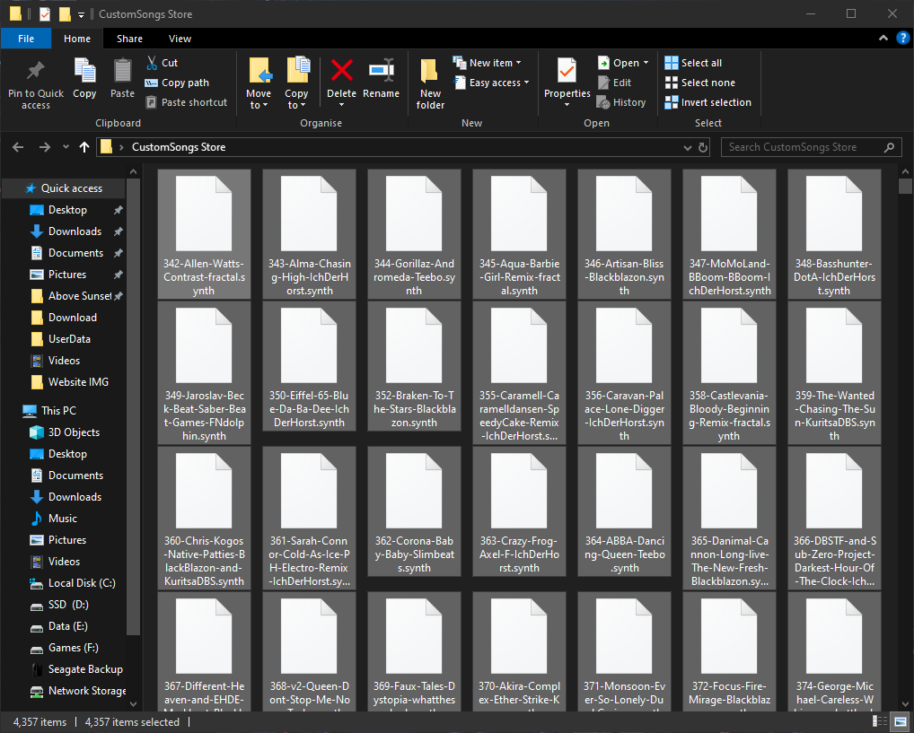
Move them into CustomSongs
Paste the beatmap files into the CustomSongs folder inside SynthRidersUC so the game can read them and build its database. Start the game and let that database build/update.
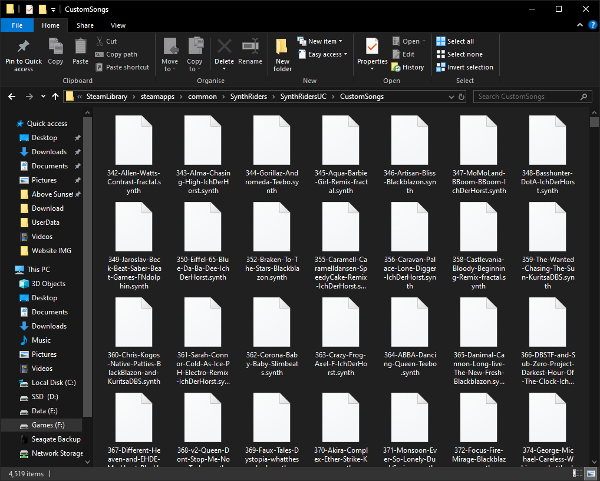
Custom stages — PC & Quest
There's currently one method for both platforms: download the stage you want from synthriderz for your device. The only difference is the stage file itself — each platform needs its own.
| Platform | Look for | Extension |
|---|---|---|
| PC | the PC icon on the stage's page | .stage |
| Quest / standalone | the Quest logo on the stage's page | .stagedroid |
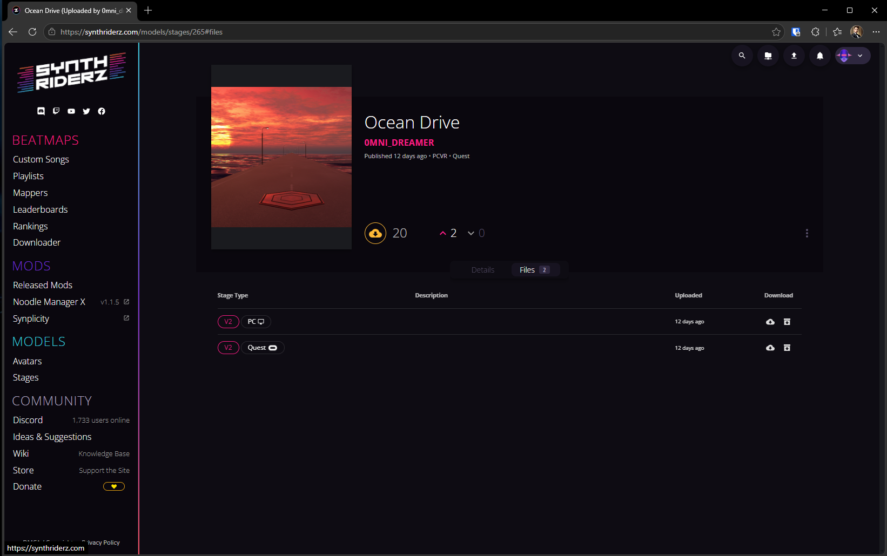
Move it into the CustomStages folder
Put the downloaded stage into the CustomStages folder — it sits in the same place as CustomSongs. On PC that's inside SynthRidersUC in the game's install directory. On Quest, the folder is at the root level of the device's storage.
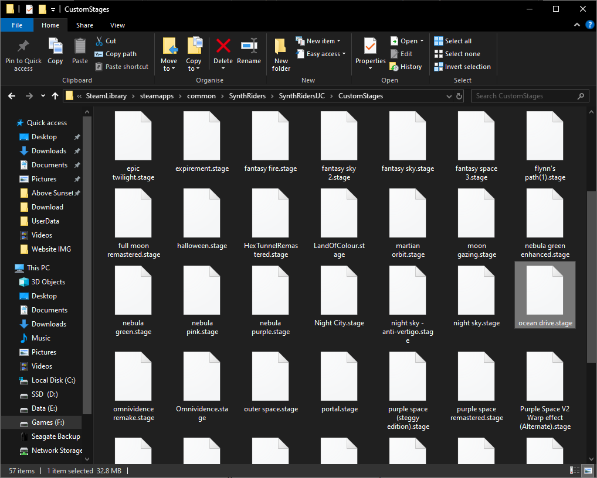
Load it in game
Start the game and let it load the stage into the database — this is usually quick. Then select it from the Stages tab on the left panel when you enter solo or multiplayer.